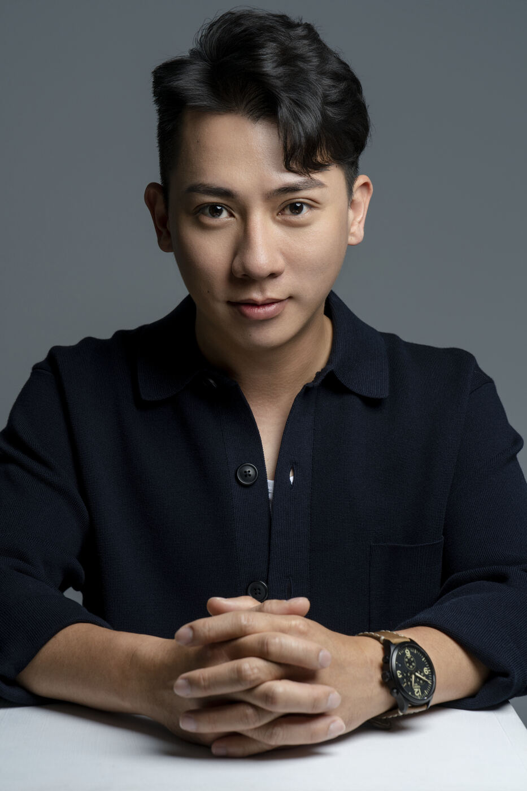
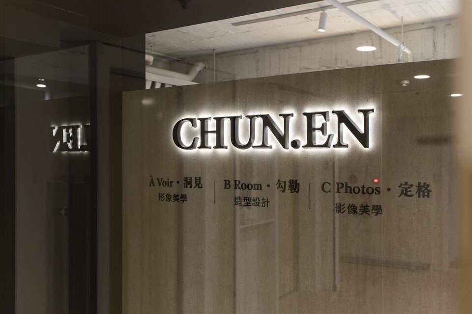

諮詢Consultation
一場不收費的對話。理解你的職業角色、受眾與使用場景，判斷適合的服務組合。
Commercial Visual Positioning·Taichung
Image is your business edge, not your wrapping.
Chapter 01顧問核心主張
真正的專業形象，
One Vision · One Team · One Image
由妝髮、服裝、拍攝同一份策略貫穿。
Chapter 02改造旅程
CHUN.EN 不是攝影工作室。我們以顧問的方式工作——先理解你的職業角色與商業場景，再讓定位、妝髮、服裝與影像，沿著同一份策略逐步成形。
一場不收費的對話。理解你的職業角色、受眾與使用場景，判斷適合的服務組合。
由 À Voir 建立形象策略——風格座標、配色邏輯、服裝方向，一套可長期沿用的視覺語言。
B Room 妝髮與服裝造型於拍攝日一次到位。乾淨、穩定、經得起鏡頭與時間。
C Photos 拍攝與精修。交付能沿用至官網、社群、簡報與媒體的長期形象資產。
Chapter 03三個子品牌，一套系統


Chapter 04精選作品
以下作品皆由 CHUN.EN 完成整套服務——形象定位、妝髮造型至拍攝交付。已獲客戶同意展示。



Behind the Atelier主理團隊
CHUN.EN 採完全預約制。我們不追求快速產出，而是經營每一份能陪伴你職涯成長的視覺資產。從第一場對話到最後一次交付，你面對的始終是同一份理解。
認識 CHUN.EN →Chapter 06勤美店

CHUN.EN Atelier · 台中勤美
403 臺中市西區臺灣大道二段 300 號 A 棟 6F-1
採完全預約制 · By Appointment Only